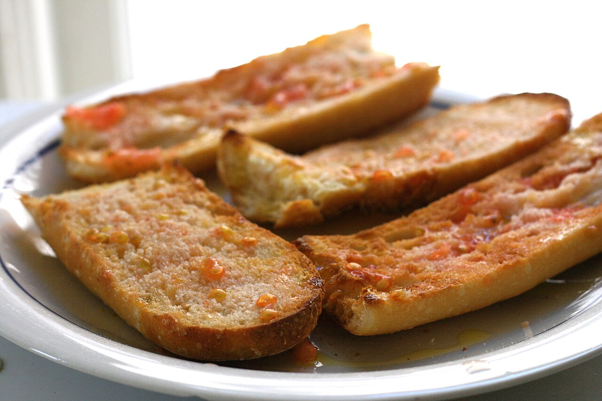
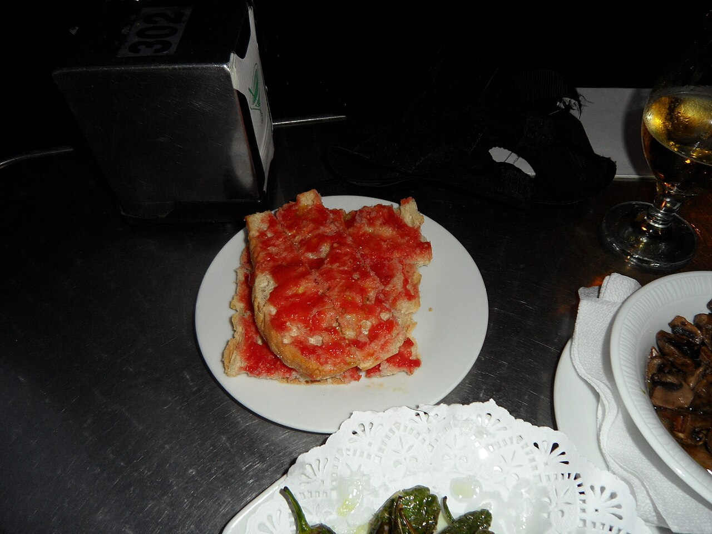
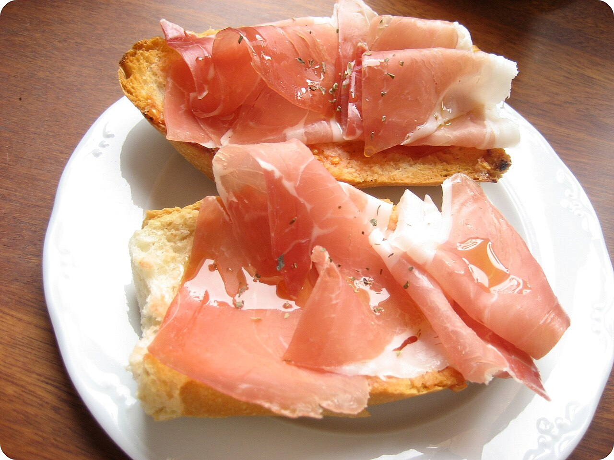

El pa amb tomàquet és probablement el plat més emblemàtic de la cuina catalana. Les primeres referències escrites daten de cap al 1884: a les cases de pagès s'untava el pa ressec de dos dies amb tomàquet per estovar-lo, en la línia de la cuina d'aprofitament que llençava el mínim menjar possible.
La tècnica té un ordre: primer el pa —de pagès, amb bona crosta i molla consistent—, després un pessic de sal, el tomàquet madur fregat de la crosta cap al centre i, al final, un raig d'oli d'oliva verge extra perquè conservi l'aroma. Posar-hi rodanxes de tomàquet a sobre, com es veu fora de Catalunya, no és pa amb tomàquet.
A partir d'aquí, les variants són infinites: amb pernil, anxoves, formatges, botifarra o escalivada. Acompanyat d'un got de vi, és esmorzar, berenar i tapa alhora, i el trobareu a tots els bars i restaurants del país.
Galeria



Vídeo
Font: Kilometre0.cat a YouTube.